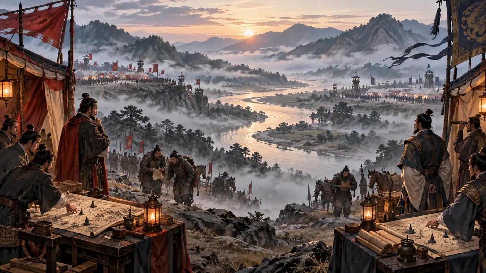
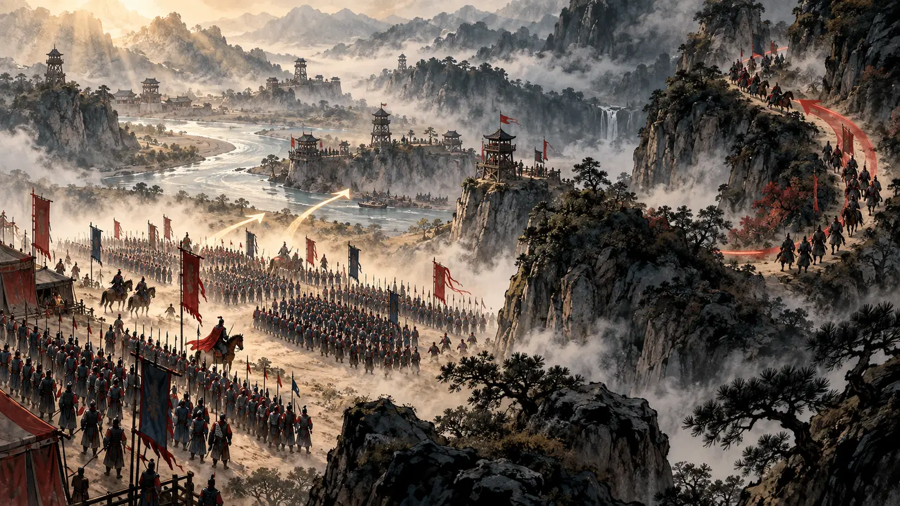

觀勢・布局
勝負，常在交鋒之前決定
真正重要的不是先衝出去，而是看懂地形、距離、補給與可承受的代價。
網頁能讓讀者先「看見」策略，再閱讀文字。遠近、地形、情報與路線不再只是名詞，而是可以被理解的局勢。
真正重要的不是先衝出去，而是看懂地形、距離、補給與可承受的代價。

同時盤點自己與對方，才能知道什麼時候該前進、等待或改變方法。

不把所有力量投入同一條路，保留能改變局勢的第二種選擇。
孫武把取勝建立在情報、條件與變化之上。重點不是好戰，而是降低不必要的消耗。
先盤點自己，再辨識對方、環境與限制；資訊越完整，越不容易被情緒牽引。
知彼知己，百戰不殆善用時機與資源配置，讓團隊不必只依靠個人蠻力，也能形成穩定優勢。
善戰者，求之於勢方法不能脫離情境；保留調整空間，並在條件改變時重新判斷。
兵無常勢，水無常形按左右鍵、點擊翻頁按鈕，或在手機上左右滑動。開啟音效後，翻頁與重點章節會出現不同聲音。
十三篇智慧・現代決策入門
《孫子兵法》以十三篇討論計算、作戰、謀略、形勢、虛實、軍爭、變化、地形與情報。它關注的並非單純勇猛，而是如何降低代價、掌握主動。
高明的布局，讓勝利在真正交鋒前便具備條件。
做重大決定之前，孫武提出五個觀察面向。它們可以轉化成今日的策略檢核表。
面對困難時，先處理策略與關係，再考慮成本更高的直接對抗。真正成熟的決策，不以消耗證明勇敢。
只研究競爭者而不了解自己，容易高估可承受的風險；只熟悉自己而忽略外部變化，也會做出過時判斷。
正面力量讓局勢穩定，意料之外的選擇創造突破。策略不是只有一條路，而是為改變保留空間。
資源有限時，不必在對方準備最完整的地方硬碰。辨認被忽略的需求與流程缺口，並隨環境變化調整方法。
鍵盤 ← → 或在頁面左右滑動
點選篇名，查看它在整套策略架構中的角色。從判斷、布局、執行到調整，十三篇彼此相連。
比較目標、環境、領導、制度與資源，先判斷是否值得投入。
本網站為 AI 教學示範，使用公有領域經典原文與自行撰寫的導讀；原創策略圖亦為本示範網站製作。